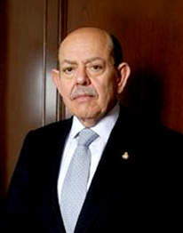

Ministro José de Jesús Gudiño
Pelayo
Nació en Autlán, Jalisco, el 6 de junio de 1943. Cursó la Licenciatura en Derecho en la Universidad Iberoamericana de México (UIA), donde se tituló con la tesis “El concepto de propiedad ejidal a la luz del derecho natural”.
Trayectoria laboral en el Poder Judicial de la Federación: Ingresó al Poder Judicial en el año de 1977 como Secretario de Estudio y Cuenta de la Suprema Corte de Justicia de la Nación, adscrito a la Primera Sala; Juez Primero de Distrito en el Estado de Sonora, con residencia en la ciudad de Hermosillo; Juez Primero de Distrito en el Estado de Tamaulipas, con residencia en la ciudad de Tampico; Juez Primero de Distrito en el Estado de Baja California, con residencia en la ciudad de Mexicali; Magistrado de Circuito adscrito al Segundo Tribunal Colegiado del Séptimo Circuito, con residencia en la ciudad de Veracruz, Ver.; Magistrado de Circuito adscrito al Primer Tribunal Colegiado en Materia Civil del Tercer Circuito, con residencia en la ciudad de Guadalajara, Jal., y desde 1995 funge como Ministro de la Suprema Corte de Justicia de la Nación, adscrito a la Primera Sala Penal y Civil.
Otros estudios profesionales: Estudios de Administración Pública, en la Escuela Nacional de Administración Local, en Madrid, y en la Escuela Nacional de Administración Pública de Alcalá de Henares, España. Concluyó la Maestría en Derecho por la Universidad Iberoamericana con la tesis “El amparo mexicano. Problemas fundamentales” , el 24 de agosto de 1990.
Trabajos publicados: Los libros: Problemas fundamentales del amparo mexicano; Introducción al amparo mexicano; El Estado contra sí mismo. Las comisiones gubernamentales de Derechos Humanos y la deslegitimación de lo estatal; Controversia sobre controversia. Discusión en torno al alcance de la competencia de la Suprema Corte de Justicia de la Nación en controversias constitucionales; La justicia federal al final del milenio; Ingeniería judicial y reforma del Estado. Preocupaciones, inquietudes, esperanzas...; La improcedencia y el sobreseimiento en la controversia constitucional; La contradicción de criterios judiciales en el derecho angloamericano y en el mexicano. Una posible explicación a la distinta perspectiva con que se aborda; Disensos y coincidencias y Laberintos de la justicia , así como múltiples artículos y conferencias sobre amparo e impartición de justicia, entre otros.
Actividad docente: Ha impartido la cátedra de Juicio de Amparo en diversas universidades: Universidad Autónoma de Baja California, Unidad Mexicali; Centro de Estudios Universitarios Cristóbal Colón, Veracruz, Ver.; Instituto Tecnológico de Estudios Superiores de Occidente (ITESO), Guadalajara, Jal.; Universidad de Guadalajara; Universidad Panamericana, Sede Guadalajara; Universidad Panamericana, Sede México; Universidad Autónoma de Tlaxcala, División de Estudios de Posgrado; Facultad de Derecho de la Universidad Nacional Autónoma de México y Universidad Iberoamericana, Plantel Santa Fe.
Reconocimientos: Ha sido merecedor de los siguientes premios: Presea Tepantlato al Mérito de la Investigación Académica, otorgado por el Instituto de Ciencias Jurídicas de Egresados de la Universidad Nacional Autónoma de México, Campus Aragón, en octubre de 2000; Premio Miguel Villoro Toranzo, concedido por el Departamento de Derecho de la Universidad Iberoamericana, Plantel Santa Fe, en enero de 2002; Reconocimiento por su contribución al estudio del Derecho y la impartición de justicia, otorgado por la Barra de Abogados México-Texas (Texas-Mexico Bar Association), en Monterrey, N.L., en octubre de 2002; Reconocimiento por sus méritos autorales y su invaluable aportación a la ciencia del Derecho, en el marco del Programa Nacional de Reconocimiento a Profesores de las Universidades Públicas de la Nación con obra escrita, otorgado por el Instituto Nacional del Derecho de Autor y la Facultad de Derecho de la UNAM, en enero de 2005.